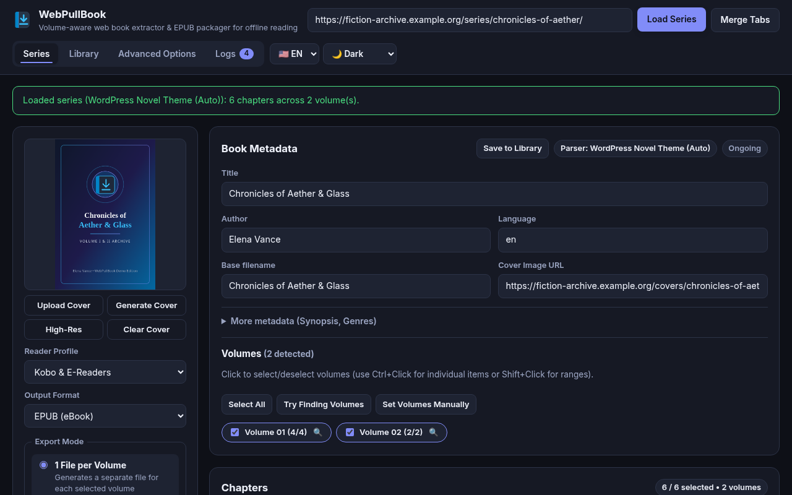
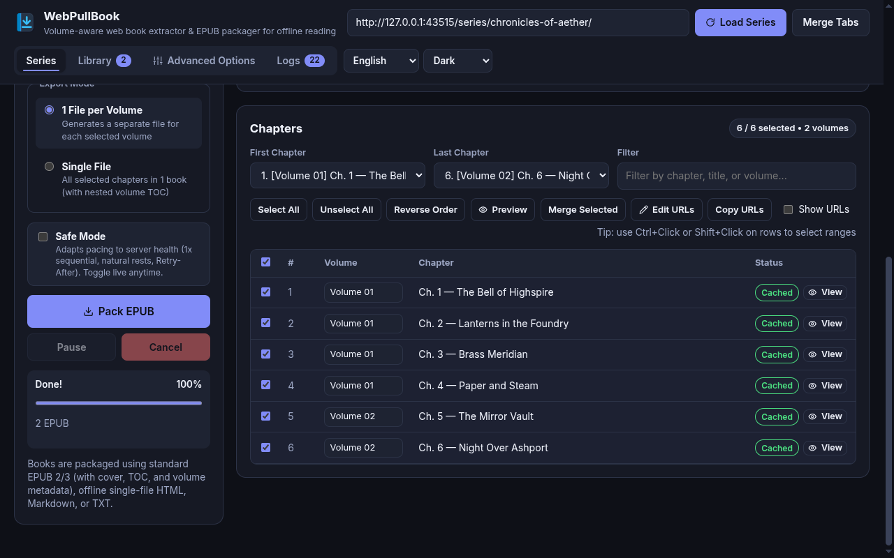

1. Instale a Extensão
Firefox: Instale com um clique pelo Firefox Add-ons (AMO).
Chrome, Edge ou Brave: Baixe o arquivo mais recente em GitHub Releases e descompacte a pasta.
O WebPullBook é uma extensão gratuita e open source para navegador que transforma histórias em capítulos, fanfics, blogs e abas abertas em arquivos EPUB, HTML, Markdown e Texto limpos—prontos para ler no Kindle, Kobo, Calibre, celular ou tablet, sem criar contas nem enviar nada para fora do seu computador.




Tudo acontece direto no seu navegador—sem precisar instalar programas complicados ou usar terminal.
Firefox: Instale com um clique pelo Firefox Add-ons (AMO).
Chrome, Edge ou Brave: Baixe o arquivo mais recente em GitHub Releases e descompacte a pasta.
chrome://extensions/, ative o Modo do desenvolvedor e clique em Carregar sem compactação na pasta extraída.Abra a página da história ou um capítulo, clique no ícone do WebPullBook na barra do navegador, escolha o perfil do seu aparelho (como Kindle ou Kobo) e clique em Empacotar EPUB.
Livros limpos, sem menus, propagandas ou poluição da página—processados localmente no seu dispositivo.
Aproveita a página que você já carregou no navegador, inclusive em sites mais modernos onde os capítulos aparecem só depois da página terminar de abrir.
Identifica o índice e separa os volumes sozinho, segue botões de "Próximo Capítulo" quando não existe lista e traz uma ferramenta visual para marcar o texto em sites diferentes.
Escolha um perfil pronto para Send to Kindle, Calibre USB, Kobo ou celular—o formato do arquivo, notas de rodapé e tamanho das imagens se ajustam automaticamente.
Leia o texto antes de baixar, corrija títulos ou parágrafos, una várias abas abertas em um livro só (Juntar Abas) e crie uma capa limpa se o site não tiver nenhuma.
Salva a capa e as imagens da história com fidelidade, descarta avisos falsos no lugar de imagens, preserva GIFs animados quando necessário e evita imagens repetidas no arquivo.
O Modo Seguro ajusta a velocidade para evitar bloqueios nos sites. Seu progresso fica guardado localmente por 7 dias e a Biblioteca verifica capítulos novos das obras salvas.
Exporte seus livros no arquivo certo para o seu e-reader, celular ou aplicativo de notas.
| Formato | Extensão | O que Vem no Arquivo | Indicado Para |
|---|---|---|---|
| EPUB 3 | .epub |
Livro digital completo com capa, sumário clicável, separação por volumes, notas de rodapé pop-up e página de resumo. | Kobo, Calibre (envio USB para Kindle), Apple Books, Thorium Reader e leitores de celular. |
| EPUB 2 | .epub |
Formato clássico com sumário, capítulos limpos e capa e ilustrações ajustadas para máxima compatibilidade. | Amazon Send to Kindle (e-mail, site ou app) e leitores digitais antigos. |
| HTML Único Offline | .html |
Um único arquivo de página com capa, índice e imagens embutidas, pronto para leitura clara ou escura. | Abrir diretamente no navegador do PC ou celular mesmo sem internet. |
| Markdown & Texto Puro | .md / .txt |
Texto limpo com títulos, parágrafos e quebras de cena, sem menus nem propagandas do site original. | Obsidian, Logseq, editores de texto e arquivos leves em texto simples. |
Respostas diretas sobre leitores digitais, privacidade e sites compatíveis.
Se você envia livros pelo Send to Kindle (e-mail, site ou app da Amazon), escolha Kindle (Antigo) para evitar rejeições na conversão da Amazon. Se você passa livros pelo cabo usando o Calibre, escolha Kindle (Moderno). Para Kobo, Tolino ou PocketBook, use Kobo e Leitores Digitais.
Não. Tudo roda diretamente dentro do seu navegador—sem conta, sem servidor externo e sem rastreamento na extensão. O navegador acessa apenas os sites que você escolher baixar. Já este site público usa contadores agregados sem cookies via GoatCounter. Consulte a Política de Privacidade.
O WebPullBook extrai texto em DOM HTML padrão acessível na sessão do navegador (Central Novel, Plataformas baseadas em Madara, Royal Road, Novel Mania, Scribble Hub, NovelBin verificados de ponta a ponta, além de suporte heurístico genérico e modo SPA). Limitações mapeadas em docs/COMPATIBILITY.md: Plataformas com DRM proprietário, Capítulos em <canvas> ou imagens embaralhadas, Paywalls fechados sem acesso na sessão, Barreiras anti-bot / CAPTCHA estritas.